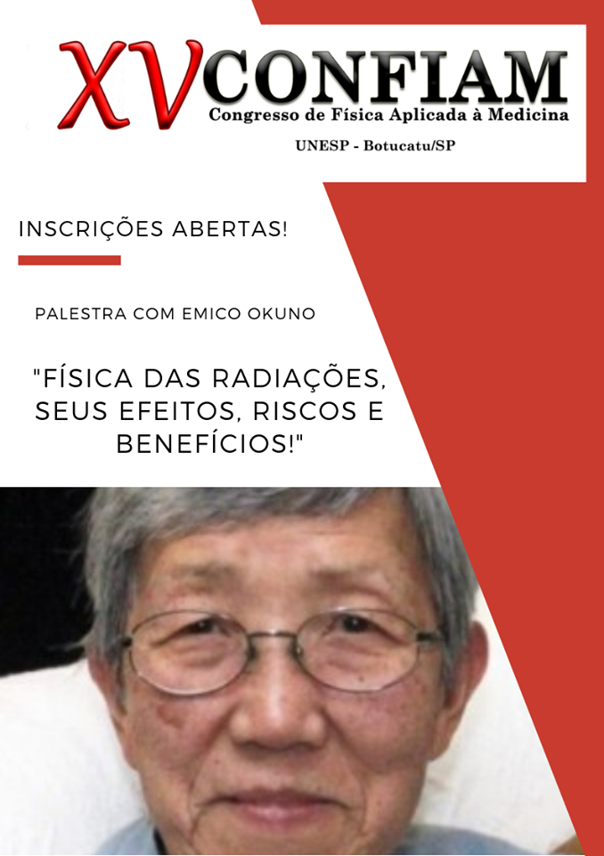

PALESTRANTES
Profª Dra Emiko Okuno
Você já garantiu a sua vaga nessa palestrona? Venha ouvir um pouco mais sobre "Física das radiações, seus efeitos, riscos e benefícios"! Com Emico Okuno! A Emico Okuno, possui graduação (licenciatura e bacharelado em Física) pela Faculdade de Filosofia Ciências e Letras da Universidade de São Paulo (1960) e doutorado em Física pela Universidade de São Paulo (1971). Fez pesquisa científica em Raios Cósmicos com o Prof. Cesare Mansueto Giulio Lattes de 1959 a 1967. Realizou estágio no Ryerson Laboratory da Universidade de Chicago (3 meses em 1962) onde trabalhou com o Prof. Masatoshi Koshiba (prêmio Nobel de Física em 2002). Fez estágio de pós-doutorado no Istituto di Física della Universtà degli Studi di Parma (1971-1973). Tem experiência na área de Física Médica - Efeitos biológicos das radiações ionizantes e não-ionizantes, Biomecânica, Proteção radiológica, Dosimetria termoluminescente e Propriedade de Mateirias. É autora e co-autora de 7 livros textos e sendo um deles a tradução para o inglês "Biomechanica fo the Human Body" , publicado pela Springer em 2014 e outro, tradução para o italiano - "La Física del Calcio", publicado na Itália pela Editora Zanichelli em Fev/2016.
